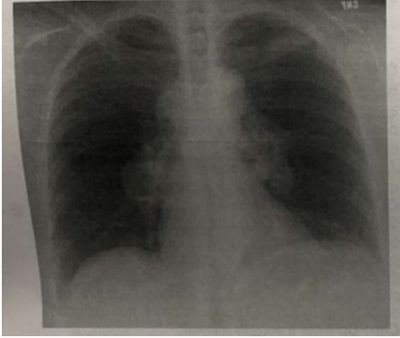

Paciente de 60 anos em uso de AAS por IAM prévio, é internado com quadro de colecistite aguda litiásica com indicação de tratamento cirúrgico de urgência. O cirurgião deverá solicitar a reserva do seguinte componente sanguíneo para eventual necessidade em caso de sangramento per operatório:
O tumor maligno mais comum da glândula tireoide é:
Paciente jovem com quadro de icterícia obstrutiva, realizou colangiorressonância que evidenciou presença de coledocolitíase e colelitíase, a melhor conduta terapêutica será:
A Classi cação TMN para um paciente idoso submetido a colectomia esquerda oncológica por adenocarcinoma, cujo o laudo anatomopatológico evidenciou um tumor que in ltra a muscular, tem metástase para 1 linfonodo regional e não apresentava metástases a distância será:
O tratamento da hemorragia digestiva alta de origem varicosa esofagiana é melhor controlado com:
Um paciente masculino de 24 anos de idade foi levado à sala de trauma após um acidente motociclístico. No exame físico de entrada apresenta fratura exposta de tíbia esquerda, escoriação no anco direito, dor e distensão abdominal. De acordo com o suporte avançado de vida em trauma, a prioridade no atendimento neste paciente é:
Um paciente de 80 kg de peso apresenta queimadura de segundo e terceiro graus em 40% da sua superfície corporal, ocorrida há aproximadamente 30 minutos. Levando em consideração a fórmula de Parkland, qual volume de Ringer Lactato deve ser infundido nas primeiras 8 horas para hidratação intravenosa?
O tratamento cirúrgico da obesidade mórbida é realizado através de diferentes técnicas operatórias. Das técnicas descritas abaixo, aquela que é estritamente restritiva é:
Os seguintes sintomas adicionados à tríade de Charcot caracterizam a pêntade de Reynolds:
Paciente com 45 anos de idade, anictérica, hidratada, hipertensa leve, dá entrada na sala de emergência com dor no hipocôndrio direito há 2 horas após jantar em uma churrascaria. Realizada ultrassonogra a e exames laboratoriais chegando ao diagnóstico de colecistite aguda. O melhor tratamento a ser instituído é:
A hipertensão arterial afeta cerca de 30% da população adulta mundial (80 milhões de adultos nos Estados Unidos e 1,4 bilhão de pessoas em todo o mundo). É a principal causa de morte no mundo e a causa mais comum de visita ambulatorial a um médico. Sobre esse tema, podemos afirmar, EXCETO:
Assinale a alternativa correta: Quais as condições que podem mimetizar no eletrocardiograma o infarto com supradesnivelamento do segmento ST?
Em relação ao exame físico do paciente portador de estenose mitral, assinale a opção que NÃO corresponde à doença avançada.
Um indivíduo de 73 anos, pardo, escriturário aposentado, procurou um consultório médico por apresentar tosse produtiva, com escarro mucopurulento nos últimos 6 dias. Informa ainda dispneia aos esforços há vários anos, mas que piorou desde o início das queixas que o levaram a procurar o médico. História pregressa de hipertensão arterial, dislipidemia e cirurgia para correção de hernia inguinal aos 60 anos. Informa carga tabágica de 50 maços/ano. O exame físico mostrou um paciente emagrecido, com frequência respiratória elevada (23 irpm), uso da musculatura acessória. Aumento no diâmetro anteroposterior do tórax. Murmúrio vesicular difusamente diminuído com estertores crepitantes na base do hemitórax direito. Em relação a este paciente os diagnósticos da condição atual e da pré-existente são:
Paciente negro 33 anos masculino com febre a esclarecer apresenta alteração cutânea, com diagnóstico dermatológico eritema nodoso. Realizada radiografia do tórax demonstrada abaixo. Qual é principal hipótese diagnóstica?

Homem, 59 anos de idade, procura assistência por di culdade para caminhar e realizar movimentos nos nas mãos, principalmente para desenhar. Ao exame apresenta atro a do abdutor do dedo mínimo nas duas mãos, pés cavos e dedos em martelo além de marcha escarvante. Hipoestesia em bota. Hiporreflexia patelar. Qual diagnóstico provável?
Qual das vacinas abaixo é contraindicada em pacientes imunodeprimidos?
Paciente masculino, 52 anos, procura serviço de emergência ortopédica por dor excruciante em tornozelo direito e hálux direito. Refere início dos sintomas por volta de 05:00h, quando se levantou para usar o toilette e percebeu dor intensa ao pisar no chão. Informa ter participado de evento social na véspera, com caminhadas em trilhas, banho de cachoeira, e nalizado com churrasco e bebidas alcoólicas diversas e em grande volume. Nunca apresentou quadro semelhante no passado. Ao exame clínico, franca artrite de tornozelo e halux, que o impedem de apoiar o pé no chão. Afebril, hipertenso (PA: 190 x 90 mmHg). Utiliza regularmente as seguintes medicações: metformina, rosuvastatina, hidroclorotiazida, nifedipina e alopurinol. A hipótese diagnóstica mais provável para o quadro clínico descrito seria:
A cetoacidose diabética é uma urgência médica definida pela presença de acidose metabólica e:
Você trabalha como médico do trabalho de uma grande empresa, quando questionado se o paciente apresenta história de hepatite, o candidato responde que já teve hepatite na infância, mas o médico na época disse que o tipo não causa hepatite crônica. O tipo de hepatite que o paciente está se referindo é:
Em 2022 o Brasil comemora 32 anos sem nenhum caso de poliomielite no Brasil. Porém a queda na cobertura vacinal pode gerar risco da introdução da doença no país. Sobre as medidas epidemiológicas para controle da poliomielite, qual das assertivas abaixo é correta?
Um paciente vai a emergência com ferimento super cial leve na perna, por mordedura de cão sadio e domiciliado. Ele não traz carteira vacinal e só se recorda de ter tomado, nos últimos cinco anos, vacinação contra in uenza e COVID-19. Sendo assim, qual a conduta a ser tomada?
Qual das alternativas abaixo se trata de uma doença de notificação compulsória em 24h?
Os ensaios clínicos controlados randomizados constituem um dos principais avanços cientí cos entre os métodos de pesquisa durante o século XX. Marque a a rmação correta sobre o risco de não utilizar a estratégia de mascaramento/cegamento em ensaios clínicos?
Revisar: possível letra faltando em enunciado
Baseado no estudo publicado em 2020 - Fatores associados ao desfecho de morte em pacientes com doença grave pelo coronavírus (COVID-19): um estudo de caso controle. Justi cativa: até o momento, a exploração de características clínicas em pacientes graves com COVID-19 era principalmente do mesmo centro em Wuhan, China. Os dados clínicos em outros centros são limitados. Este estudo visa explorar os parâmetros viáveis que podem ser usados na prática clínica para prever o prognóstico em pacientes hospitalizados com doença grave por coronavírus (COVID-19). Com base nos estudos Caso- Controle é correto afirmar:
As arboviroses transmitidas pelo Aedes aegypti (Dengue, Chikungunya e Zika) têm se constituído em um dos principais problemas de saúde pública no mundo. A dengue é a arbovirose urbana de maior relevância nas Américas. Estima-se que 3 bilhões de pessoas estejam sob o risco de contrair a doença e que ocorram, anualmente, 390 milhões de infecções e 20 mil mortes. Segundo a Portaria GM/MS nº 1.378, de 9 de julho de 2013, entende-se por vigilância em saúde "um processo contínuo e sistemático de coleta, consolidação, disseminação de dados sobre eventos relacionados à saúde, visando o planejamento e a implementação de medidas de saúde pública para a proteção da saúde da população, a prevenção e controle de riscos, agravos e doenças, bem como para a promoção da saúde". Nesse contexto, compete à vigilância epidemiológica desempenhar um rol de atividades, entre as quais está CORRETO afirmar:
No Brasil, a doença meningocócica é endêmica. O meningococo é a principal causa de meningite bacteriana no país. Os coe cientes de incidência têm sido reduzidos nos últimos anos, com registro de menos de um caso para cada 100.000 habitantes, entre os anos de 2014 e 2016. Acomete indivíduos de todas as faixas etárias, porém aproximadamente 30% dos casos noti cados ocorrem em crianças menores de 5 anos de idade. Os maiores coe cientes de incidência da doença são observados em lactentes, no primeiro ano de vida. Nos surtos e epidemias, observam-se mudanças nas faixas etárias afetadas, com aumento de casos entre adolescentes e adultos jovens. Na forma mais grave, a meningococcemia, a letalidade chega a quase 50%. Desde a década de 1990, os sorogrupos circulantes mais frequentes no Brasil foram o C e o B. Após um período de predomínio do sorogrupo B, observa-se, a partir de 2005, um aumento no número e na proporção de casos atribuídos ao sorogrupo C em diferentes regiões do país. Em meados de 2010, devido ao aumento de circulação do sorogrupo C e à alta incidência da doença observada em crianças, a vacina meningocócica C (conjugada) foi introduzida no calendário de vacinação da criança. A vigilância epidemiológica tem como objetivo:
Revisar: possível letra faltando em enunciado
O estudo DAPA-HF randomizou pacientes com insu ciência cardíaca de fração reduzida (ICFER) sintomática para dapagli ozina ou placebo. O desfecho composto primário de piora da insu ciência cardíaca (hospitalização ou visita urgente resultando em terapia intravenosa para insu ciência cardíaca) ou morte por causas cardiovasculares ocorreu em 386 pacientes (16,3%) no grupo dapagliflozina e em 502 pacientes (21,2%) no grupo placebo (HR 0,74; IC 95% 0,65 a 0,85; P <0,001). O número necessário para tratar foi 21, o que significa que:
Sabendo que a prevalência de uma doença na população é de 20%, foi desenvolvido um teste com sensibilidade de 80% e especificidade de 70%. Neste caso hipotético o valor preditivo positivo é de:
Um estudo publicado este ano mostrou que a exposição ocupacional a agrotóxicos foi associada a neoplasias hematológicas. O delineamento do estudo epidemiológico e a medida de associação mais apropriada para este tipo de estudo, respectivamente, são:
ALS 49 anos, há 01 ano apresentando redução da libido, alteração do sono, acordando 02 a 03 vezes a noite. Há 6 meses surgiram episódios de rubor facial seguido de sensação de calor e após sudorese fria restrita a face e tronco, com episódios diurnos e na madrugada. G3P3. 03 cesarianas e aos 40 anos foi submetida a histerectomia total por miomatose uterina. IMC 33Kg/m², PA110x56mmHg. Hemoglobina glicada 5,8%, Colesterol total 210 mg/dl, HDL 40 mg/dl e triglicerídeos 170 mg/dl. Mãe e Tia materna com osteoporose. Irmã mais velha fez fratura do colo do fêmur ano passado. Mamogra a de julho/2022 BIRADS 2. Densitometria óssea: coluna lombar T - score de - 0,5 desvio-padrão e em colo de fêmur T - score de - 0,8 desvio-padrão. Diante deste quadro a melhor conduta é:
VVS, 30 anos, refere prurido vaginal intenso há 5 dias, uxo vaginal espesso, prurido e ardência miccional. Está no 26º dia do ciclo menstrual, sem uso de método contraceptivo. Exame ginecológico: hiperemia vulvar extensa, com ssuras, hiperemia vaginal com conteúdo aumentado e grumos aderentes às paredes vaginais, teste de aminas negativo e pH 4,4. O melhor diagnóstico e conduta está na alternativa:
Mulher de 34 anos, G3P3, 03 cesarianas por hipertensão, em uso de 17 - Desogestrel continuo e em amenorreia. Foi a consulta de rotina, realizou citologia oncótica cujo resultado foi de células glandulares atípicas endometriais de significado indeterminado, possivelmente não neoplásica/sem outras especificações (ACG-US). A conduta é:
Paciente de 29 anos, G0P0, entra no pronto atendimento pálida, FC 87bpm, relata está no primeiro dia do ciclo menstrual e com dor pélvica tipo cólica menstrual intensa. PA 110x60 mmHg. Relata menarca aos 12 anos, dismenorreia desde os 14 anos, com piora de intensidade nos últimos 5 anos. Não consegue mais controlar a dor com uso de dipirona ou cetoprofeno, necessitando com frequência de medicação mais forte como opioides ou uso de medicação parenteral. Iniciou atividade sexual aos 20 anos, em uso de condon regular. Colpocitologia oncótica negativo para neoplasia em março de 2022. Hemograma realizado na unidade com hemoglobina de 12g/dl, beta-HCG negativo. O clinico evidencia abdome ácido, sem descompressão dolorosa, peristalse presente, sangramento escuro tipo menstrual, Toque bimanual útero em RVF, xo, anexos impalpáveis, espessamento brótico no fundo de saco posterior. O Diagnóstico provável e a conduta mais adequada estão na opção:
Paciente de 63 anos menopausada, com espessamento endometrial e sangramento uterino anormal pós-menopausa. A histeroscopia identi cou pólipo atípico, cuja biopsia retornou o resultado de adenocarcinoma do endométrio, tipo endometrioide. G3. É CORRETO afirmar que?
Gestante de 27 anos, g-2 p-1 (01 parto a fórceps), cursando a 24ª semana comparece à maternidade com queixa de perda de secreção gelatinosa e desconforto no baixo ventre. Ao exame, ausência de contrações em 10 minutos, colo pérvio para 4,0 centímetros, apresentação cefálica, flutuante. Qual o diagnóstico provável?
Na incompatibilidade sanguínea materno-fetal, devemos administrar a imunoglobulina anti-D no pós parto em qual condição?
Paciente de 28 anos, primigesta, cursando a 34° semana de gestação, comparece à maternidade com queixa de dor no baixo ventre. Ao exame é constatado quatro contrações em 10 minutos de 45 segundos, colo apagado 80%, dilatado para 4 cm, apresentação cefálica, 1°plano de Hodge, bolsa íntegra, batimentos cardiofetais de 148 bpm. Realizado cardiotocografia que apresentou características compatíveis com desacelerações tardias. Qual a conduta a ser adotada?
Gestante na 30ª semana, g-4p-2 (02 cesarianas e 01 aborto) procura a maternidade com queixa de sangramento vermelho vivo moderado e indolor. O exame obstétrico revela altura uterina de 29 cm, tônus uterino normal com ausência de contrações em 10 minutos, bcf-142 bpm e ao exame especular presença de sangramento vermelho vivo uindo através do colo uterino. Qual é a principal hipótese diagnóstica?
Em relação á hiperêmese gravídica, assinale a afirmativa ERRADA;
Escolar, 8 anos, sexo masculino, previamente hígido, é levado pela mãe ao posto de saúde com lesões características de verrugas vulgares (total de 6), em dorso da mão direita no terceiro dedo da mesma mão. Demais dados do exame físico sem anormalidades. Relata contato domiciliar com cão. Assim devemos:
Pré-escolar, três anos, sexo feminino, é trazido por seus pais à emergência que relatam que seu lho está menos ativo e mais pálido do que o habitual. Referem que há quatro dias o menino apresentou quadro de febre (38,5°C), vômitos e diarreia com sangue e que desde ontem está urinando pouco, porém tolerando líquidos via oral. Segundo os pais, o paciente era saudável. Ao exame: pálido, hipocorado 3+/4+, irritado, prostrado e com dor à palpação abdominal. FC: 160 bpm, FR: 40 irpm, PA: 100 x 60 mmHg. Exames laboratoriais: Hb:6,6g/dL, Ht:21%, leucometria: 15.900/mm³ (bastões 14%, segmentados 65%); plaquetas: 55.000/mm³, Na+: 133mEq/L, K+: 4,5 mEq/L, creatinina: 2,8 mg/dL, ureia: 127 mg/dL. Exame de urina: hematúria. A principal hipótese diagnóstica é:
Lactente de 18 meses é levada pela vizinha ao pronto socorro, às pressas dizendo que a criança estava morrendo. A criança estava muito pálida e com aumento da barriga há quatro horas. Sabe que a criança é portadora de "anemia de família", diagnosticada no teste do pezinho. Ao exame físico: regular estado geral, afebril, hipocorada +3/+4, anictérico, taquipneico, hidratado, perfusão periférica lenta. ACV: taquicardia, abdômen: globoso, mas permitindo palpação, fígado no rebordo costal direito e baço a 8cm do rebordo costal esquerdo. Baseado no quadro clínico acima os diagnósticos são:
Escolar, 9 anos, é levada à emergência apresentando há 10 dias prurido anal diário, na madrugada, que o faz perder o sono. Seu irmão mais novo teve o mesmo sintoma, melhorando após uso de medicação. Exame físico: sem alterações. Os medicamentos que podem ser utilizados no tratamento desta patologia são:
Criança dois anos e seis meses, masculino, previamente hígido, é levado pela mãe ao pediatra por apresentar quadro de tosse e chiado no peito nos últimos 15 dias. Exame físico: ativo, discreta dispneia, sem sinais de toxemia. AR: roncos e sibilos disseminados, discreta diminuição do murmúrio vesicular em todo hemitórax direito. RX do tórax: hiperinsu ação à direita com discreto desvio das estruturas do mediastino para a esquerda. Hipótese diagnóstica e conduta são:
V.A.S.P, 2 anos e 6 meses, sexo feminino, iniciou quadro de crise convulsiva tônico-clônica generalizada em vigência de febre em seu domicílio. Procurou atendimento na emergência mais próxima da sua casa onde recebeu 3 doses de diazepam sem resposta. Prescrito então dose de ataque de fenitoína (15 mg/kg) com resolução do quadro. Duração total do evento estimada em 40 min. Paciente transferida para o CTI pediátrico de referência para seguimento de investigação. Avó paterna com história familiar de epilepsia em tratamento. Ao exame de admissão no CTI: Paciente sonolenta, irritada quando estimulada, sem sinais de rigidez de nuca, afebril. Estável hemodinâmicamente, sem alterações de pele. Baseado no caso clínico em questão, qual o esquema terapêutico empírico inicial indicado para a faixa etária da paciente na suspeita de meningoencefalite infecciosa aguda?
Lactente de 9 meses, diagnóstico prévio de síndrome de Down, iniciou quadro de febre baixa, tosse seca, coriza hialina, e espirros evoluindo em 72h com taquidispnéia. Procurou atendimento na emergência infantil onde recebeu resgate com broncodilatador com boa resposta. Liberado para casa com medicações de controle e orientações. Retorna a emergência após 24h com piora clínica. Admitido no setor taquidispneico e hipoxêmico. Feito resgate com broncodilatador com resposta parcial. Transferido para Unidade de Terapia Intensiva Pediátrica (UTIP). Sinais vitais de admissão na UTIP: FC 145 bpm; FR: 58 irpm; Sat: 92% (Ar ambiente); Tax: 37°C; PA 95 x 57 mmHg Ausculta pulmonar com sibilos difusos, tempo expiratório prolongado, Tiragem subcostal e retração de fúrcula moderada. Qual a principal hipótese diagnóstica e o tratamento preconizado?
As imunode ciências primárias são doenças genéticas que têm como principal característica alterações das funções imunológicas, levando o paciente a maior suscetibilidade às infecções de repetição, doenças autoimunes e neoplasias. Na maioria dos casos, os sintomas clínicos se iniciam na infância, e o pediatra tem seu papel no diagnóstico. Dessa forma, temos sinais de alerta para que o pediatra, na presença desses, possa solicitar a investigação de uma possível imunodeficiência primária. Devemos investigar imunodeficiência em criança de:
Pré-escolar, inicia há 4 dias de febre 38°C, dor de garganta, mal-estar, diminuição do apetite e adenomegalias em região suboccipital e pós auriculares bilaterais, seguido de rash macular róseo claro, irregular, disseminado, iniciado em face e pescoço, distribuindo-se pelo corpo. Sem descamação após desaparecimento do mesmo. No início do quadro, o exame da orofaringe revelava lesões pequenas, de coloração rósea e petéquias em palato mole. A caderneta vacinal da criança não estava em dia. Em relação ao quadro clínico, o agente é:
Qual o principal agente etiológico considerando a faixa etária, dos quadros de Bronquiolite Aguda e de Pneumonia Comunitária Bacteriana Febril Simples, respectivamente? Respostas: 1 12 23 34 45